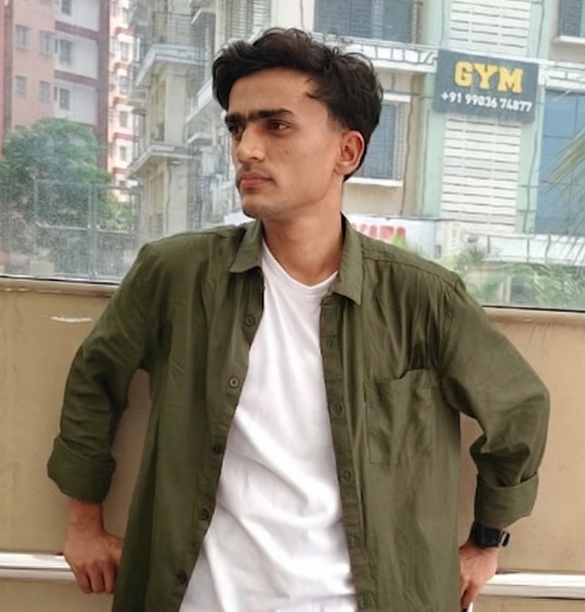

hey! i'm luckman
I build and experiment with AI agents and RAG systems.
About Me
I'm an Artificial Intelligence and Machine Learning student focused on autonomous agents, retrieval systems, and multimodal applications. I've worked on projects ranging from RAG-based chatbots and AI agents to research assistants with LangGraph.I enjoy turning complex problems into practical solutions, I love playing story-based video games when I want to cut off from real world.
Skills
Programming Languages
- Python
- Java
- C
- HTML
- CSS
Libraries and Frameworks
- LangChain
- LangGraph
- RAG
- Vector Embeddings
- LLM Agents
- TensorFlow
Generative AI and Agents
- LangChain
- LangGraph
- RAG
- LoRA/PFET
- Vector Embeddings
- LLM Agents
Database and vector stores
- MySQL
- Supabase
- MongoDB
- PostGreSQL
- Qdrant
- Chroma
Tools & Platforms
- FastAPI
- Streamlit
- AWS (S3)
- Firebase
- Selenium
- Git & GitHub
- RESTful APIs
- Linux
- Agile
Projects
Mock Interview Agent
Voice-driven AI simulating real interview pressure.
Multi-Source Research Agent
Autonomous research agent synthesizing real-time info from Google, Bing & Reddit.
DocTalk
Multimodal WhatsApp chatbot for healthcare and vaccination related advices.
PixelFlow
Social media platform featuring JWT authentication, ImageKit.io storage, and an asynchronous SQLAlchemy backend.
Potato Disease Predictor
CNN-based computer vision model trained with TensorFlow and Keras to classify agricultural diseases with high accuracy.
Certifications & Achievements
GCP Skills Boost Legend
Completed 72+ skill badges covering Vertex AI, BigQuery, and Cloud Fundamentals.
Hacktoberfest Super Contributor
Successfully merged six pull requests to open-source repositories.